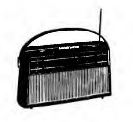

Electronics
Radios and turntables must be my main hiperfixations, I collect them since I was fourteen years old. I haven't posted yet about this since I have a few traumas talking about this.What are radios?
Well radios are sound communication systems who transmite via radio waves. If you were born after 1920 you probably know what are them.What are turntables?
It is a device to play music through vinyls or acetate disks. Vinyls can come in different formats and sizes, being the most common ones 7" 45 RPM and 12" 33 1/3 RPM, but it is also possible to find 10" 78 RPM and 16 RPM were made on 7" and 12", but they are incredibly hard to find.
| Company | Model | Year | Country | Description | Picture |
|---|---|---|---|---|---|
| National Panasonic | SG-1400F | 1980 | Japan | Fully operational equip, it includes radio AM-FM, turntable, tape recorder and aux cord. | 
|
| Sony | HMK-4000 | 1975 | Japan | This one is a big radio, it weights like 20 kg. The needle is really expensive but it is one of the best setups ever made by Sony in the 70's. It includes also AM-FM radio and tape recorder. |  |
| SABA | Salzburg International Model SB18 | 1966 | Germany | This is a custom Radio Cabinet. SB18 is exactly the same as KN18. It has a SABA radio and a record-player: ELAC 160 automatic
record changer. Both setups are inside a pretty elegant furniture. This particular radio works with
CRT's
also the radio signal indicator works with "magic eye"!
|

|
| BSR | Monarch UA15 | 1963 | England | A small turntable, it must be connected to other radio to work. The curious part about this specific model is that it can reproduce 78 RPM records and 16 RPM records. And it also has a double needle! | 
|
| Telefunken | Transistar 7281 T | 1963 | Western Germany | Red colored small portable radio which uses six D batteries, inside it has a beautiful electronic architecture! Fun fact: It has a DIN3 connector for phono. |  |
| Phillips Chilena S.A. | B4SA57A | 1954 | Chile | Big and heavy AM only radio with pick-up. The most interesting part about this is it has labeled most of chilean radio stations who were active in the 50's. None of them exist anymore because FM Radio replaced all of them. So its kind of useless nowadays unless you connect it to a pick-up turntable. |  |
| Toshiba | Transistor 7P-70A | 1969 | Japan | Red coloured and pocket-portable AM radio with 3.5 mm jack for headphones | 
|
| General Electric | 7-2500 | 1980 | United States (but made in Korea) |
Small black-coloured portable AM/FM radio with antenna! and headphone jack |  |
{kind=link}